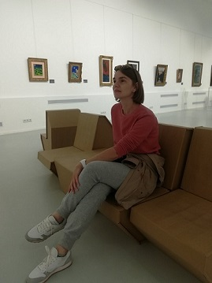

Проект «Literature» - делюсь своей любовью к чтению и рассказываю о книгах, которые оказали на меня влияние, помогли в разных жизненных ситуациях, заинтересовали, удивили, впечатлили.
О книгах, которые хочется рекомендовать.
О тех, которые вы знаете и любите, и о произведениях, которые после моего рассказа захотите прочесть.

Читала я всегда. Но любовь к чтению появилась достаточно поздно. В 17 лет мне попалась в руки Э.М. Ремарк “Триумфальная арка”. Именно эта книга стала толчком в мир литературы. Сегодня чтение - мое хобби.
Во время чтения я попадаю в другой мир и перестаю замечать все вокруг. Я размышляю о том, как закончится произведение, анализирую его героев, ситуации, в которые они попадают.
Процесс поиска нового чтива достаточно интересный. Бывают длительные периоды когда невозможно найти то самое. А бывает в электронную книгу попадает книг 5-8. И хочется, чтобы время остановилось…
Придётся перепробовать много разных жанров, прежде чем вы найдёте книги, от которых действительно получаете удовольствие. Не сдавайтесь, пока не отыщете «свою» книгу, ведь она может изменить жизнь.
Если вы не представляете свой день без книги - вас иронично называют «книжным червем». А прозвище это пошло от насекомых, которые живут в корешках и переплетах книг.
Около 70% книг во всем мире покупают женщины.
Самая читающая нация – Исландия! Возможно, это связано с погодой, природой или менталитетом. Но каждый год здесь выпускается около 1000 книг с тиражом от полутысячи
до десятка тысяч экземпляров. Это не так много на первый взгляд, но из-за того, что в Исландии проживает малое количество людей, выходит примерно 3 книги на 1000 жителей.
Кажется, что все любят читать: кто-то — научную литературу, кто-то — развлекательную, кто-то — классику. А если не любят, то точно умеют. Но нет! Неграмотность по-прежнему остается одной
из весомых проблем. Каждый 5 взрослый в мире не умеет читать и писать. Самые высокие показатели отмечаются в Южной и Западной Азии, а также в странах Африки к югу от Сахары. 5. Доказано, что во время чтения человек чаще всего
смотрит в разные стороны. Причем он может направлять свой взгляд в противоположные стороны, а также линии взгляда могут перекрещиваться.
Тот, кто в школе сдавал технику чтения на низкую оценку, будет сейчас сожалеть об упущенном времени и возможностях научиться скорочтению. Потому что установлено, что у тех, кто читает быстрее,
– глаза устают меньше.
Чтение снижает уровень стресса. А также помогает расслабиться и отвлечься. На самом деле, если вы погружаетесь в книгу с головой, неважно, что происходит в вашей личной
или рабочей жизни, проблемы отходят на второй план. Поэтому очень полезно, кроме успокоительных и, например, медитаций, находить для себя интересную литературу и отдаваться ей полностью. Трудностей в этот прекрасный момент просто не существует.
Библиоклептомания – это безудержная страсть к книгам, а именно желание доставать их незаконным путем. Одним из самых известных людей, который занимался похищением книг, был
Стивен Блумберг. Он украл больше 20 тысяч уникальных книг из почти 300 библиотек. Более того, для осуществления своего черного дельца Стивен проникал в библиотеки даже через вентиляционную систему и шахту лифта.
В тюрьмах Бразилии создана специальная программа, которая стимулирует заключенных читать. Каждая прочитанная книга уменьшает срок на 4 дня , максимально можно сократить
себе срок на 48 дней в год. Согласитесь, идея гениальная, а главное, небесполезная!
Теперь немного о выдающихся людях разных эпох и народов. Известный французский император и полководец читал по 2000 слов в минуту, Горький – около 4000, Бальзак мог за 30
минут прочесть среднего размера роман (примерно 180-200 страниц). Николай Рубакин, живший в начале 20 века, прочитал за всю жизнь более 250 тысяч книг. А вот американский изобретатель Эдисон был весьма находчив в чтении: он схватывал сразу
по 2-3 строки текста и запоминал написанное практически целыми страницами. Вот это сноровка, концентрация и талант!
Раньше книги были недоступны большинству, поэтому их приковывали в библиотеках цепями. Цепи были достаточно длинны, чтобы снять книгу с полки и почитать, но не давали возможности
вынести книгу из библиотеки. Эта практика была распространена вплоть до 18 века.